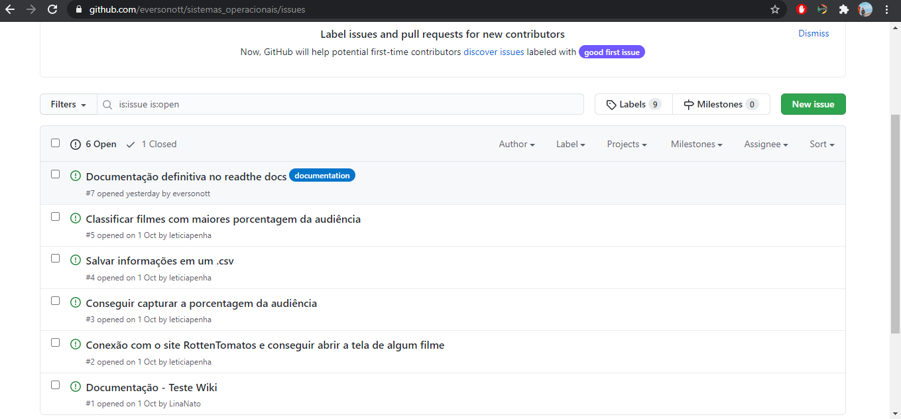
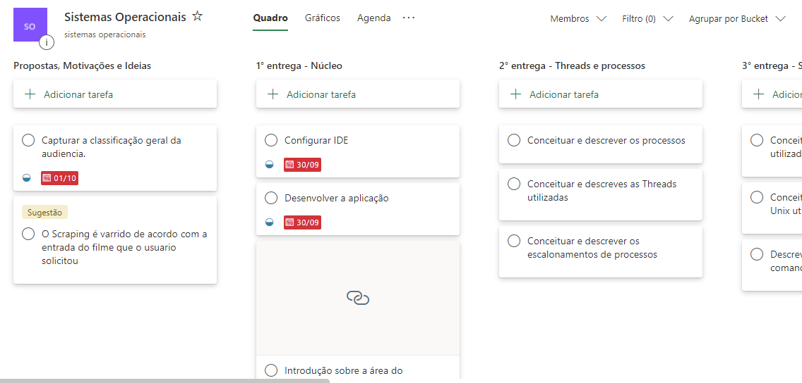

Planejamento
No inicio do projeto criamos planner com atividades para serem executadas em formato KanBan. Além disso, nos organizamos no github, criando issues para acompanhar o desenvolvimento do software e para que todos os integrantes do grupo tivesse visibilidade do que estava sendo feito e o que faltava desenvolver.  
Dificuldades
Um obstáculo que encontramos foi a página que fazemos o scraping estar fora do ar/em manutenção, atrapalhando o desenvolvimento e os testes. Outra dificuldade que tivemos foi desenvolver em threads, apesar de conseguir executar com várias threads para acelerar a execução, o arquivo gerado no final saía todo desorganizado e faltando informações, com isso limitamos a execução e apenas 5 threads.